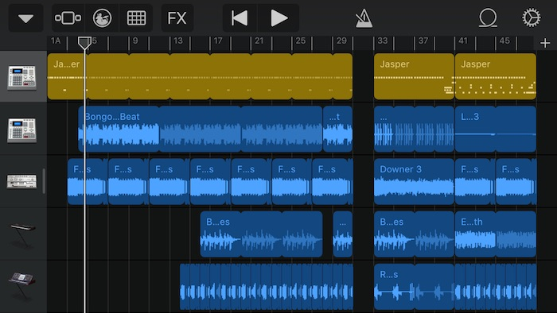

My Family
I live with my Mum, Dad, and Little Brother. My Mum’s a nurse, and my Dad’s a firefighter, so sometimes, they’re both not at home at the same time. When that happens, me and Aiden (my brother) stay with Nay and Tay. My family on my Dad’s side is pretty big, and like to keep up with each other. My Mum’s side is even bigger. There’s usually a party or get together every other few weeks. I also have a whole lot of cousins, and we’re all pretty close, as we grew up together.

My Skills
Some of my technological skills include:
- Typing
- Sketchup
- Floorplanner
- InDesign
- Photoshop
- Illustrator
- JavaScript
- CSS
- Microsoft Word, Excel, PowerPoint
- Google Docs, Slides, Sheets, Forms, Drawings
- iMovie
- Garageband

Hobbies
When I have the time, I really enjoy to just read a good story and/or listen to music. I already read most of my physical books, so now I took an interest in Fanfiction. And, despite what people think, it’s not all that bad. Sometimes, Fanfiction is even better than the original. As for my music, I don’t really have a preference. I usually find my music by Shazaming the songs I like on the radio, and downloading them on Apple Music.
Interests
Academic wise, I’m interested in graphic design. I found that I very much enjoyed being able to let my artistic side show, but on a computer, which made it even better. Outside of school, I do Brazilian Jiu-jitsu, I’m on my gym’s Wrestling team (Neutral Grounds). I’m an orange belt in Jiu-jitsu, and fairly good at wrestling, although I still have a lot to improve.